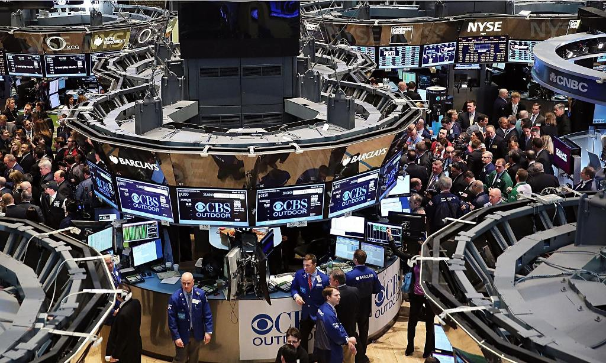

Регистрация в телеграм-боте: @Mavrodi_robot

Вот не хотел же ничего писать, зарок себе даже давал, но!.. Как можно молчать, находясь в современной России, в этом каком-то, поистине злом королевстве кривых зеркал? Где правда вдруг становится ложью, а ложь — правдой. Белое — чёрным, а чёрное… Не просто белым даже, а… Блин, да слов таких в человеческом языке нет, чтобы белизну эту неслыханную и невиданную описать! Ни в одном языке мира их нет. Ибо незачем им, другим языкам и народам. Только у нас ведь, в России, она на всей земле и встречается. Белизна эта ангельская. Больше — нигде.
Ладно, это была присказка, перейдём к сказке.
Что представляет собой современное общество? (Ну, по крайней мере, российское.)
21-й век на дворе! Компьютеры-интернеты! Прогресс-ссс, господа!
Стало оно лучше, свободнее, справедливей, чем, скажем, лет сто назад, при царе-батюшке? Что-то я сомневаюсь…
Наглые и самоуверенные сверхбогачи, не знающие, куда девать свои даром им достающиеся, льющиеся неиссякаемой рекой миллионы и миллиарды (нефть, газ, металлы и пр., пр.), с одной стороны, и полунищие, полуголодные, озлобленные и полностью разуверившиеся во всём массы, с другой. Которых все только обманывают, обманывают, обманывают… Всё им только обещают, обещают, обещают… И кажется,
что изменить ничего уже невозможно! Всё, конец!!!
Но так ли это? Может, наоборот, начало? Новой реальности. Которую просто никто пока не видит?
Нервный центр финансовой системы любого государства — фондовая биржа.

Что такое биржа? Миллионы мелких инвесторов. Армия! И если эту армию возглавить… Правильно. Можно перевернуть мир.
Но вот только как это сделать?
Все без исключения современные финансовые системы могут существовать лишь при условии, что все их участники действуют независимо друг от друга.
Хаотически. Молекулы. Броуновское движение. Как только возникает упорядоченность — у системы начинаются проблемы.
Представьте себе такую ситуацию. Тысяча человек договорились между собой, и каждый из них вложил в некий коммерческий банк по какой-то незначительной сумме. Скажем, по 100 рублей. А потом, в один прекрасный день, ВСЕ ОНИ ОДНОВРЕМЕННО, тоже по взаимной предварительной договорённости, пришли эти свои деньги из банка забирать…
Последствия для банка могут быть очень серьёзные. И дело тут даже не в сумме выплат. Толпа, ажиотаж и пр. Остальные клиенты могут занервничать… Если действовать целенаправленно и осмысленно (скажем, на протяжении нескольких дней, несколькими группами), в банке вполне можно спровоцировать панику. А можно на каком-то этапе вступить с руководством банка в переговоры…
Но там тактика должна быть несколько иной. Прежде всего, риска потерь денег там практически нет (биржа ведь не рухнет, это не банк, акции всегда можно будет потом продать, пусть и чуть дешевле), поэтому суммы можно вкладывать гораздо большие.
Предположим, опять-таки, что появляется достаточно большая группа людей, инвесторов (назовём её группой А), которая действует как единое целое. Причём прибыль её не интересует. Она действует хаотически и бессистемно. Скажем, бросают какую-то общую «монетку» и определяют, акции какой именно компании они ВСЕ сегодня купят. (А завтра-послезавтра — продадут.) Если группа достаточно большая (точнее, средства, которыми она оперирует, достаточно значимы), биржу через некоторое время начнёт лихорадить. Поскольку появится какой-то совершенно новый, бессистемный и постоянно действующий фактор, реагировать на который биржа, соответственно, пока абсолютно не умеет. Ведь она ещё с ним до сих пор никогда не сталкивалась.
Цены акций компаний начнут вдруг скакать вверх-вниз по совершенно новым правилам. Ведь остальные инвесторы просто безучастно наблюдать за происходящим (смотреть на массовую скупку или продажу акций его родной компании) не смогут, как бы им это всё не объясняли и как бы их не успокаивали. Они тоже станут покупать и продавать.
Очень важно при этом, чтобы акции покупались и продавались группой А именно на случайной основе. Во всяком случае, на первом этапе. Это гарантирует участников от потерь (все в среднем всегда будут на нуле, чистая теория вероятности) и, соответственно, от ненужных разочарований, которые могут привести к прекращению существования группы.
В дальнейшем, когда будут выявлены (чисто эмпирически) характерные реакции биржи на те или иные действия группы А, можно будет переходить к следующему этапу. Скажем, договариваться с компаниями, чьи акции могут стать завтра объектом массовых атак, покупок-продаж. А могут и не стать…
Групп, кстати, может быть и несколько. Они могут быть относительно небольшими, действовать на начальных этапах независимо друг от друга, в дальнейшем же кооперироваться, объединяться и пр. Вариантов масса. Какой путь наиболее эффективный — одна большая группа или несколько маленьких, покажет только практика.
Между прочим, наличие лидера в группе А тоже на начальном этапе не очень желательно. Собственно, он не нужен. Механизм «бросания общей монетки» можно сделать делом чисто техническим и рутинным. Зато отсутствие лидера делает группу практически неуязвимой для внешних воздействий. Скажем, со стороны властей.
Вспомните судьбу МММ. Когда с моим арестом всё рухнуло. Не стоит повторять собственных ошибок.
Особо следует отметить, что система саморегулируема. Чем больше группа А, тем эффективнее она сможет действовать. А как только остальные участники рынка увидят, что действия группы эффективны, как только они в этом убедятся, они, разумеется, сразу же и сами захотят в неё вступить. Группа начнёт быстро расти. Что, в свою очередь, ещё больше повысит её эффективность… А значит, и
привлекательность… И дальше процесс пойдёт, по всей видимости, лавинообразно.
А почему нет? Участники группы ведь ничем абсолютно не рискуют. Проиграть они не могут в принципе. Только выиграть.
1. Деньги вас никто переводить никуда не просит. Акции вы покупаете-продаёте самостоятельно. Обмана поэтому нет и быть не может. Ведь к своим деньгам имеете доступ только вы сами.
Всё, что от вас требуется — держать строй. Действовать строго по команде. Как римские легионеры. Которые, как известно, именно за счёт такого вот порядка и били всех.
2. Поскольку акции продаются-покупаются группой А (и вами соответственно) чисто случайно, на основе бросания монетки, то потерь у вас в среднем быть не может тоже. Разве что теория вероятности действовать перестанет.
Всё! Просто, как пареная репа. Риска никакого, но зато!..
А что «зато»? Всё зато. Фактически это аналоги политических партий, только в экономике. Которые очень быстро смогут заставить с собой считаться. Делиться всех этих!.. в белых ангельских одеждах своими сверхприбылями. А почему бы и нет? Пусть поделятся.
Тем более, что момент сейчас чрезвычайно благоприятный. Исключительно просто! Кризис, неустойчивые, нервные настроения инвесторов… Стоит только чуть-чуть качнуть систему, малейшее дополнительное усилие… Последняя капля, опрокидывающая стоящий на наклонной плоскости огромный чан с водой. Критическая точка системы. Точка бифуркации.
Да и интернет, опять же. Социальные сети… Объединиться, договориться сейчас очень просто. Это не прошлый век. И всё равно ведь революционерам — удавалось. А уж сейчас-то!.. И подавно. Договорятся.
Итак, семя брошено. И оно — взойдёт теперь непременно. Может, не прямо завтра-послезавтра, чуть позже, но — взойдёт обязательно. Идея — не умрёт и не забудется. Возможно, мы всё-таки будем ещё жить в более справедливом мире. Впрочем, будущее покажет. Посмотрим. Поживём — увидим.
Регистрация в телеграм-боте: @Mavrodi_robot